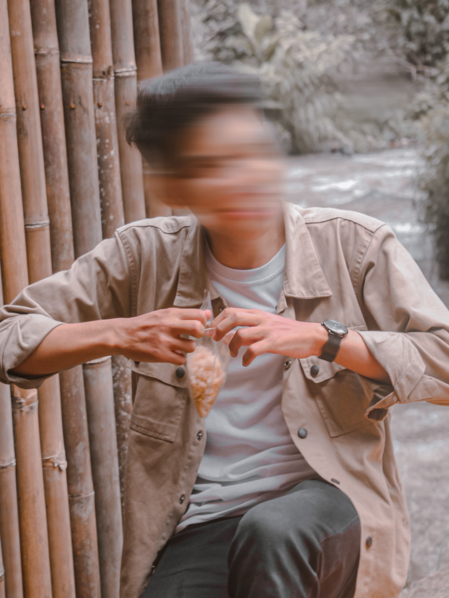

saya
Hary Kurniawan
Selamat datang di portofolio saya yang sederhana
namun penuh dengan keindahan dan inspirasi!

Selamat datang di portofolio saya yang sederhana
namun penuh dengan keindahan dan inspirasi!

Saya seorang mahasiswa semester 2 yang sangat tertarik dalam dunia desain. Saya memiliki minat yang kuat dalam desain 3D, 2D, serta desain UI. Selain minat saya dalam desain, saya juga memiliki hobi fotografi dan editing. Saya merasa bahwa fotografi adalah cara mengekspresikan kreativitas melalui sudut pandang visual contohnya seperti foto di samping.
Saat ini saya sedang menempuh pendidikan S1 di Universitas komputer Indonesia dengan Jurusan Sistem Informasi
Saya lebih mendalami desain web dikarenakan saya bisa menggabungkan minat dan bakat saya dengan peluang karir yang menarik dan bermanfaat. Saya ingin terus mengembangkan keterampilan saya, menerapkan pengetahuan baru, dan menciptakan desain web yang mengesankan dan berdampak positif."
"Saya sangat menghargai pendapat dan saran Anda! Dengan senang hati menerima masukan dari pengguna seperti Anda untuk meningkatkan pengalaman pengguna di website ini."
Atau hubungi :